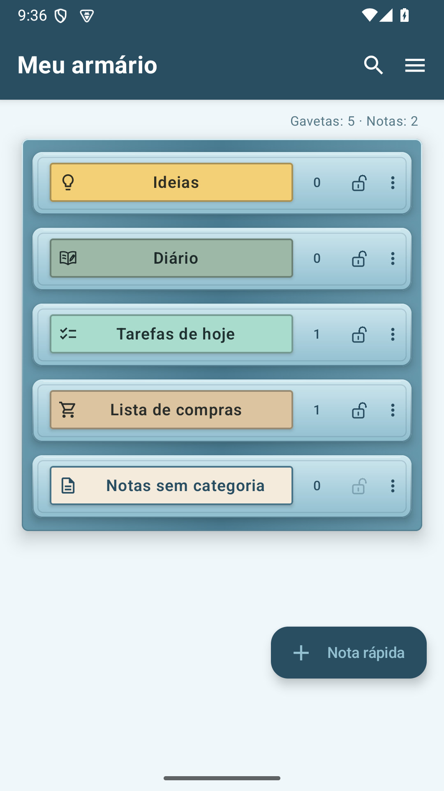
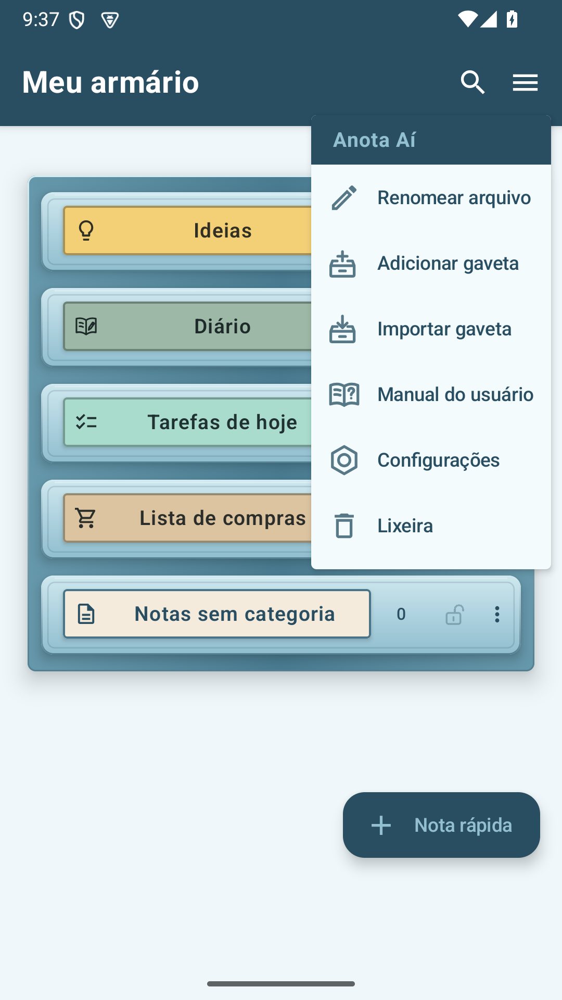
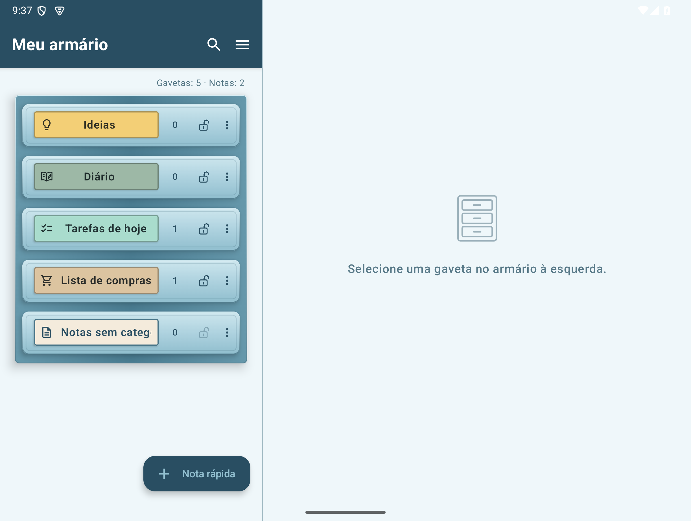

Anota Aí — Manual do usuário
Versão 0.9.34
Escreva seus pensamentos como notas, seus planos para o dia como tarefas e suas compras como uma lista. Você pode revisar este manual a qualquer momento acessando “Manual do Usuário” no menu de três linhas (☰) da cômoda.
1. Primeiro uso e configuração da tela
Anota Aí é um aplicativo que coleta notas em gavetas por tópico. Ao tocar na gaveta, uma lista de notas é aberta e, ao tocar em um memorando, uma tela para escrever o conteúdo é aberta.


O cadeado indica o status bloqueado da gaveta e o escudo vermelho indica se a criptografia está em vigor. As gavetas trancadas são indicadas por um cadeado preenchido com a cor do tema, e as gavetas abertas são indicadas por um cadeado aberto apenas com contorno.
Ver as ferramentas do armário
À direita do nome da cômoda, Find All e o menu de três linhas da cômoda (☰) são exibidos. Na parte superior do menu, você pode ver o nome do aplicativo com a cor do tema e, abaixo dele, você pode ver Editar nome da gaveta, Adicionar gaveta, Importar gaveta, Manual do usuário, Configurações e Lixeira nessa ordem. O manual do usuário está localizado logo acima das configurações, que são indicadas por um ícone de porca hexagonal.
A tela horizontal do telefone e a tela dobrada quase quadrada exibem as gavetas à esquerda e o conteúdo à direita em 45:55. A tela ampla Fold Wide/tipo tablet mantém a proporção existente de 38:62. Os anúncios são anexados na parte inferior da área de conteúdo direita e não são exibidos durante a edição.
Gavetas gerais e dedicadas
Ideias, Notas sem categoria e as gavetas adicionadas pela ferramenta Nova gaveta são gavetas gerais para notas comuns. Diário, Tarefas de hoje e Lista de compras são gavetas dedicadas, criadas para suas respectivas finalidades.
As notas comuns podem ser movidas para outra gaveta geral. As notas em gavetas dedicadas não podem ser movidas para outras gavetas.
Crie sua primeira nota
Para escrever uma nota diretamente na tela do armário, toque em ＋ Nota rápida abaixo do armário. A nota começa em notas sem classificação, e você pode escolher a gaveta de destino tocando no nome da gaveta no cabeçalho da nota.
Para criar uma nota em uma gaveta específica, abra uma gaveta existente e toque em ＋ Nova nota. Se precisar de uma nova gaveta, siga estas etapas.
- Expanda as ferramentas com a seta (‹) à esquerda da gaveta e pressione Nova gaveta.
- Insira o nome da gaveta e pressione Criar.
- Abra a gaveta que você criou e pressione ＋ Nova nota.
- Escreva o título e o corpo. Sua entrada será salva automaticamente. Você pode usar Voltar para voltar à lista e reabrir suas anotações.

Qual gaveta devo usar?
| Gaveta | usar |
|---|---|
| gaveta normal | Coletamos artigos, fotos, imagens e arquivos por tópico, como ideias, viagens e trabalho. |
| Diário | Mantenha anotações por data e leia-as em um calendário ou lista de registros. |
| Tarefas de hoje | Gerencie tarefas pendentes por data, hora, notificações, cronograma de repetição e status de conclusão. |
| Lista de compras | Gerencie itens, quantidade e status de compra de cada item de mercearia. |
| Notas sem categoria | Reúna todas as anotações para as quais você ainda não decidiu uma gaveta. |
Renomear cômoda
Toque no menu da cômoda (☰) → Editar nome da cômoda. Renomeie e salve.

Tela ampla e tela cheia
Em um tablet ou dobrável desdobrado, ao selecionar uma gaveta da gaveta esquerda, uma lista de notas aparecerá à direita. Ao abrir uma nota, você pode ver a lista e a tela de edição lado a lado. Use o botão de tela cheia no cabeçalho para expandir a área de edição e use o botão de diminuir o zoom para retornar à tela de dois espaços.

2. Gerenciar gavetas
Ao criar uma gaveta, você pode escolher o nome, a cor da etiqueta e o ícone. As gavetas já criadas também podem ser alteradas nas configurações da gaveta.
Alterar as configurações da gaveta
- Na tela do armário, toque em Mais (…) à direita da gaveta que deseja alterar.
- Selecione Configurações de gaveta.
- Altere o nome da gaveta, escolha um círculo de cor na aba Cor da etiqueta e um ícone na aba Ícone da gaveta.
- Confira a prévia na parte superior e toque em Salvar.
A etiqueta mostra o ícone escolhido junto com o nome da gaveta. Nomes longos rolam dentro da área do nome.


O menu Mais (…) de Notas sem categoria abre diretamente as configurações da gaveta. Para saber como criptografar uma gaveta, consulte o guia de criptografia de gavetas.
Alterar ordem das gavetas
Pressione e segure a gaveta e arraste-a para cima ou para baixo até o local desejado. A localização das notas não classificadas é fixa.
Excluir uma gaveta
Selecione Mais → Excluir gaveta e verifique as instruções. As notas e anexos dessa gaveta são movidos para a Lixeira. As gavetas criptografadas são excluídas após a autenticação e mantêm a proteção criptografada mesmo na Lixeira.
Recrie uma gaveta dedicada
Diário, Tarefas Hoje e Lista de Compras mantêm suas funções exclusivas mesmo se você alterar o nome ou ícone. Gavetas dedicadas excluídas podem ser criadas em Configurações → Gaveta Dedicada. As notas antigas não retornarão automaticamente para a gaveta dedicada recém-criada.
↑ Para o índice3. Escreva e edite notas
Novas notas e salvamento automático
＋ Nova nota na gaveta cria uma nota na gaveta atual. ＋ O memorando rápido começa a partir de um memorando não classificado e, antes de salvar pela primeira vez, você pode selecionar a gaveta a ser salva pressionando o nome da gaveta no cabeçalho e confirmar com o botão de seleção. Quando você seleciona a lista de tarefas ou compras de hoje, ela muda para um formato de lista que corresponde a essa gaveta.
Quaisquer alterações inseridas serão salvas automaticamente sem um botão Salvar. Você pode reabrir o que escreveu voltando à lista. Quando você fecha um memorando novo ou existente, ele aguarda o salvamento e a classificação e depois se move para um local visível. Se você classificar por ordem de edição, a nota que acabou de editar aparecerá no topo da lista. Basta fechar o novo memorando sem inserir nada. Para se livrar da própria nota Excluir o título ou corpo de um memorando já salvo é editar o conteúdo., mova-a para a lixeira. Se aparecer uma mensagem de falha ao salvar, verifique as informações e tente novamente.
Visualizar e classificar por gaveta
Selecione Veja mais (⋮) → Visualização da gaveta no cabeçalho da lista de notas da gaveta. Em Mais, também há configurações de gaveta e exportação de gaveta, e a pesquisa por data é adicionada ao diário. A exportação de uma gaveta tem como alvo todas as notas e anexos dessa gaveta, independentemente dos resultados da pesquisa ou do status da seleção. Os menus de gestão existentes para cada gaveta da cómoda continuam disponíveis. Selecione os critérios de classificação de notas, sempre mostre as notas importantes primeiro e mostre apenas os títulos apropriados para esta gaveta. As alterações feitas aqui não afetarão outras gavetas ou configurações gerais.
Itens não especificados separadamente operam como Usar o padrão das configurações. Mesmo que você mesmo tenha alterado os itens, você pode seguir novamente todas as configurações clicando no mesmo texto. O valor padrão é definido em Configurações → Visualização da gaveta. Se você desativar Mostrar apenas o título, ele aparecerá como um cartão tradicional com texto, visualização anexada e data. Somente o método de exibição muda; o conteúdo da nota permanece o mesmo.
Marque notas importantes
Se você pressionar a estrela (☆) na nota, ela mudará para uma estrela preenchida (★). Pressione novamente para desligá-lo. Você pode definir notas importantes para serem exibidas primeiro em Configurações → Visualização da gaveta ou selecioná-las separadamente na visualização de gaveta para cada gaveta. O título da data das notas de tarefas de hoje não exibe uma estrela de nota. Uma estrela após um item da lista indica a importância dessa tarefa ou item.
Mover para outra gaveta
- Abra uma nota normal e pressione o ícone mover próximo ao nome da gaveta no cabeçalho.
- Selecione a gaveta normal que deseja mover e pressione o botão mover. A seleção sozinha não se move e o cancelamento mantém a gaveta atual. Confirme quando solicitado a bloquear ou remover a proteção.
As notas nas tarefas de hoje, na lista de compras e no diário não podem ser movidas diretamente para outra gaveta e o ícone de movimentação não é exibido. Para obter informações sobre como mover várias notas de uma vez, consulte Selecione várias notas.
Guia de ícones da barra de ferramentas de edição de notas
Abaixo está a barra de ferramentas para notas gerais. Os ícones de luz não estão disponíveis no momento. Para formatação de fonte, primeiro selecione o texto a ser alterado e depois aplique-o. Ferramentas dedicadas para a lista de tarefas/compras de hoje são explicadas em Capítulo 6 e Capítulo 8.
Barra de ferramentas superior: Desfazer, Anexar, Voz
| ícone | nome | O que você faz |
|---|---|---|
 | Desfazer | Restaura o texto, a localização do anexo e o movimento do anexo de outro memorando que foram alterados durante a edição atual para o estado anterior. Se não houver nada para reverter, será exibido em cor clara. |
 | Refazer | Reaplica as alterações revertidas no corpo. Se não houver nada para reaplicar, será exibido em cor clara. |
 | câmera | Tire uma nova foto e anexe-a ao memorando. |
| Fotos | Selecione e anexe uma foto do seu telefone. | |
| Desenho | Faça um desenho em uma tela branca e coloque-a em uma nota. | |
| Colar | Insira fotos, imagens, gravações e arquivos gerais cortados do mesmo memorando na posição atual do cursor. Ele só é habilitado quando há um anexo recortado, e será desabilitado novamente quando for colado. | |
 | Anexar arquivo | Selecione um arquivo e anexe-o à nota. Se você tocar no arquivo anexado, poderá abri-lo com um aplicativo compatível. |
 | entrada de voz | Digite o que você disse em letras. Ele é colocado no título ou texto na posição onde a entrada de voz foi iniciada e substitui o caractere selecionado, se houver. |
 | Registro anexado | Grave sua voz ou som e anexe-o como um arquivo de áudio. Ao contrário de STT, não é convertido em letras. |
Barra de ferramentas inferior: formato da fonte, lista, data
| ícone | nome | O que você faz |
|---|---|---|
 | Audacioso | Exibe o texto selecionado em negrito. Pressione novamente para desativar a exibição em negrito. |
 | dica | Inclina o texto selecionado. Pressione novamente para desligá-lo. |
 | sublinhado | Sublinha as letras selecionadas. Pressione novamente para desligá-lo. |
 | Realçar | Adiciona um fundo amarelo atrás do texto selecionado para enfatizá-lo. |
 | Tamanho da fonte | Abra o menu Tamanho da fonte e diminua para A− ou aumente para A+. Primeiro selecione o personagem que deseja alterar. |
| cor da fonte | Selecione a cor da fonte entre preto, vermelho ou azul. | |
 | Espaçamento entre linhas | Aumente ou diminua o espaçamento entre linhas no corpo do texto. Isso é diferente da função para alterar o tamanho da fonte. |
 | Lista de caixas de seleção | Transforma a linha atual em uma lista de verificação ou desformata a lista de verificação. Você pode marcar a conclusão clicando na caixa de seleção. |
 | lista com marcadores | Substitui a linha atual por uma lista começando com um ponto. |
 | Lista numerada | Substitui a linha atual por uma lista de números. Os números do próximo item continuam automaticamente. |
 | carimbo de data/hora | Insere a data e hora atuais na posição do cursor no texto. |
Quando você coloca o cursor no título, a barra de ferramentas de formatação de texto fica oculta e reaparece quando você clica no texto. Se sua tela for estreita, você pode deslizar a barra de ferramentas para a esquerda ou para a direita para visualizar outras ferramentas. Em tela inteira, você pode deslizar a barra de ferramentas para cima ou para baixo.
Apenas um formato entre caixa de seleção, marcador ou lista de números é aplicado a uma linha. O formato muda quando você pressiona um botão de lista diferente. Quando você pressiona Enter em uma lista numérica, o próximo número continua, e quando você pressiona Enter em um item vazio, a lista termina. As restrições de título, corpo e anexos podem ser verificadas em Limitações de capacidade e comprimento.
↑ Para o índice4. Anexe e compartilhe fotos, imagens e arquivos
Insira fotos, gravações e arquivos
Na barra de ferramentas superior de um memorando geral, selecione Câmera, Foto, Paint, Anexar arquivo, Anexar gravação. Conceda as permissões necessárias do dispositivo e tire uma foto ou selecione um arquivo. Consulte Nota sobre edição de informações da barra de ferramentas para obter as funções de cada ferramenta e as diferenças no anexo de entrada/gravação de voz.
Alterar local do anexo na mesma nota
Mude a posição clicando em Mais (…) no canto superior direito da foto → Mover para cima ou mover para baixo. Você também pode manter a foto pressionada e arrastá-la para cima ou para baixo. A linha mostrada é onde você irá colocá-la e ela rolará automaticamente quando você a arrastar para a borda da tela. Durante a edição, você pode reverter a movimentação com Desfazer.
Fotos, imagens, gravações, arquivos em geral… Pressionar Cortar no menu tira-o da nota e coloca-o no buffer do aplicativo. Ele permanecerá mesmo se você fechar a nota ou sair do aplicativo. Clique no local onde deseja colar e clique em Colar na barra de ferramentas superior. Se o salvamento for bem-sucedido, o buffer será esvaziado. Se você truncar outro anexo, ele excluirá permanentemente o anexo A existente e confirmará que você deseja truncar B. Se você cancelar, A permanecerá no buffer e B permanecerá na nota original. Se a substituição falhar, mantenha A. Recortar e colar regularmente pode ser desfeito e refeito durante a edição atual. A substituição do buffer, que exclui permanentemente os anexos existentes, é irreversível e redefine o histórico de edições.
Só um anexo pode ficar aguardando para ser colado. Enquanto isso, Recortar fica desativado nos menus de todos os outros anexos. Depois de colar, Colar fica desativado e você pode recortar outro anexo. Isso muda a posição do anexo existente sem criar uma cópia. É possível desfazer e refazer o recorte e a colagem. Se fechar a nota antes de colar, o anexo recortado será excluído.
Mover anexo para outra nota
- Fotos, imagens, gravações e arquivos gerais a serem movidos… No menu, toque em Mover para outra nota.
- Selecione a gaveta normal que contém a nota que deseja receber. Desbloqueie ou descriptografe, se necessário.
- Selecione a nota que deseja receber e pressione Ir. Você também pode encontrar o título de uma nota pesquisando.
Mova um anexo de cada vez. Ele sai da nota original e é adicionado ao final da nota de destino. Gavetas dedicadas, como Diário, Tarefas de hoje, Lista de compras e Backup, não podem ser a origem nem o destino. Ao mover de uma gaveta criptografada para uma sem criptografia, confira o aviso sobre a mudança de proteção. Se cancelar a movimentação ou a autenticação, o anexo permanece na nota original.
Enquanto a nota original estiver aberta, use Desfazer na barra superior para devolver o anexo à posição original e Refazer para movê-lo novamente. As edições anteriores continuam no histórico. O desbloqueio ou a autenticação de criptografia podem ser solicitados outra vez. Se cancelar a autenticação ou a operação falhar, nenhuma das notas será alterada e você poderá tentar novamente depois. Fechar a nota limpa o histórico de desfazer dessa sessão de edição.
Ver foto ampliada
Clique em uma foto ou imagem para abri-la em tamanho maior. Use dois dedos para aumentar ou diminuir o zoom ou toque duas vezes para aumentar o zoom. Para mudar de direção ou desenhar, toque em Modificar para abrir o Paint. Isso não alterará a galeria original do seu telefone.
Desenhando e Marcando Fotos
- Um desenho em branco começa com o Paint na barra de ferramentas superior. Para exibi-lo sobre uma foto, abra-o maior e toque em Editar.
- A barra de ferramentas inclui Desfazer, Refazer, Caneta, Seleção de Cor, Borracha, Espessura, Girar para a Esquerda e Girar para a Direita nesta ordem. Se sua tela for estreita, você pode deslizar a barra de ferramentas para a esquerda ou para a direita para visualizar outras ferramentas.
- Selecione uma cor básica na seleção de cores ou ajuste o matiz, a saturação e o brilho. Ao pressionar o botão de espessura, você pode escolher entre cinco tamanhos indicados por linhas e círculos. A caneta e a borracha exibem uma borda ao redor da ferramenta selecionada.
- A borracha apaga apenas as linhas desenhadas nesta edição, preservando a foto abaixo. Traços antigos adicionados a uma imagem já salva não podem ser apagados separadamente.
- Gire a imagem e a linha juntas em 90 graus com o botão de rotação no final da barra de ferramentas. Você pode restaurar linhas e rotações com Desfazer/Refazer.
- A imagem em branco será adicionada à sua nota quando você pressionar Concluído. Se você editou uma foto existente, toque em Salvar e escolha Salvar como cópia ou Substituir o original. Você pode escolher se suas alterações serão descartadas quando você cancelar ou fechar.
Salvar uma cópia adiciona a imagem editada logo após a original e mantém a original. Quando há 30 fotos ou 50 anexos no total, salvar uma cópia fica desativado e o motivo é exibido. Ainda é possível substituir uma imagem existente.
Após a confirmação, Substituir original substitui o anexo existente no memorando pela imagem modificada. Você não pode reverter para a imagem antes de substituí-la, então selecione Salvar como cópia se quiser manter o original. Os traços são mesclados na imagem salva. A resolução pode diminuir durante o processo de edição/rotação e salvamento, portanto guarde o original de alta resolução separadamente.
Você também pode visualizar o manual somente leitura e fotos de diários anteriores em formato maior. A tela ampliada no estado somente leitura exibe apenas um botão Fechar.
Compartilhar como PDF
- Abra uma nota e pressione o botão Compartilhar no cabeçalho.
- Na janela de compartilhamento do Android, selecione o aplicativo e destinatário desejado, como KakaoTalk.
Envie o título, corpo, formato de texto, fotos e imagens em PDF. Os destinatários podem lê-lo sem Anota Aí. Os arquivos gravados e gerais exibem apenas o nome e o tipo, e o arquivo original não é incluído no PDF. Se você fechar a janela de compartilhamento, ela não será enviada. O PDF enviado é uma cópia no momento do compartilhamento e não reflete quaisquer edições subsequentes na nota.
↑ Para o índice5. Mantenha um diário
Continuar o recorde de hoje
Ao abrir a gaveta do diário, você verá uma lista de diários existentes. Se você não tem um diário para hoje, escreva-o como ＋ Diário de hoje abaixo, e se já existir, abra-o como Continuação do diário de hoje. A data é exibida automaticamente e um título curto pode ser escrito separadamente. Na primeira vez que você insere as informações, elas são salvas e não são criadas notas em branco para os dias em que você não registrou nada.
Lendo e editando registros anteriores
Toque no diário na lista ou selecione o dia com o registro em Mais (⋮) na parte superior da gaveta do diário → Pesquisar por data. Na visualização da gaveta de Mais, defina o método de classificação e exibição. Não há ícone de calendário/lista na tela de edição do diário e você pode retornar à lista pressionando Voltar. Os registros anteriores são somente leitura, mas você pode ampliar as fotos, marcá-las como importantes, compartilhá-las e movê-las para a lixeira.
Ao pressionar Desbloquear Editar, orientaremos você sobre o que significa preservar os registros daquele dia. Não o mantém somente leitura e Editar permite a edição do registro atualmente aberto. Se eu fechá-lo e reabri-lo, ele voltará ao modo somente leitura. Mesmo depois da meia-noite, os registros que você já gravou podem ser salvos até você fechar a tela.
As agendas não passam diretamente para outras gavetas. Mesmo se você restaurá-lo da Lixeira, ele manterá a data do histórico. Para renomear e recriar gavetas, consulte Gerenciar gavetas.
↑ Para o índice6. Tarefas de hoje, horário, notificação e configurações de repetição
Anote tarefas para hoje e amanhã
Confira a lista por data na gaveta de tarefas de hoje. Se você não tiver uma lista para hoje, verá o botão ＋ Tarefas hoje, e se tiver apenas uma lista para hoje, verá o botão ＋ Tarefas amanhã. Se você tiver as listas Hoje e Amanhã, oculte o botão Criar. Abra uma lista existente clicando nela. Notas em branco abertas e fechadas sem conteúdo não são consideradas parte da lista criada. Use uma lista por data.


Itens de tarefas importantes são marcados com uma estrela ao lado deles, sem fundo. Com fundo… Pressionar o botão abre as configurações desse item.
Adicionar/concluído/marcar item como importante
- Adicionar item (+): Adicione uma nova tarefa. Você também pode escrever o nome do item e pressionar Enter para continuar no próximo item.
- caixa de seleção: Alterações concluídas e incompletas. Os itens concluídos terão um tachado.
- Veja mais itens à direita (…): Configurações de horário de abertura·Configurações de notificação·Configurações de repetição·Marcas de prioridade·Excluir itens.
- Marcar nota com estrela: ativa ou desativa o realce no menu de itens. Itens importantes estão marcados com estrelas.
- Excluir item: O item normal limpa apenas uma linha selecionada. Para itens recorrentes, selecione Excluir apenas este item ou Parar de repetir a partir deste dia. Os itens excluídos desta vez não serão criados novamente nessa data. Abortar Recorrência remove itens incompletos da data selecionada e interrompe a criação futura, mantendo o histórico passado e os itens concluídos. Mesmo se você mover todo o memorando de data para a lixeira, a configuração de repetição será mantida. Distinga-o do botão de lixeira no cabeçalho, que exclui a nota inteira.
Para configurá-lo com a ferramenta superior, primeiro posicione o cursor clicando na letra do item a ser alterado. Os botões de relógio, campainha e repetição aplicam-se ao item atual. As ferramentas que não estão disponíveis ficam esmaecidas. O espaçamento das ferramentas superiores é ajustado de acordo com a largura da tela.
Reordenar itens
Ative Modo de movimento para itens com setas para cima e para baixo sobrepostas na parte superior. Pressione e segure a alça de movimento que aparece ao lado do item e arraste-a para cima ou para baixo. Quando terminar de mover, pressione o mesmo botão novamente para retornar ao modo de escrita.

Defina um horário agendado
- À direita do item... → Pressione Definir horário. Alternativamente, passe o cursor sobre um item e pressione o botão superior do relógio.
- Defina um horário e confirme. O item exibirá o horário agendado.
- Para se livrar dele, abra Configurações de horário novamente e toque em Sem horário.
Apenas definir um horário não aciona uma notificação. Se você quiser notificações, configure-as separadamente.


Receba notificações
- À direita do item... → Pressione Configurar lembrete.
- Se você tiver um horário agendado, selecione notificações por hora, 10 minutos antes ou 30 minutos antes. Caso não tenha horário agendado ou queira recebê-lo em horário separado, utilize Escolher horário do lembrete.
- Salvar. Se o seu dispositivo solicitar permissão de notificação, conceda-a. Ao receber as instruções corretas de permissão de notificação, verifique também as configurações do dispositivo.
O ponto no tempo selecionado é exibido no círculo à esquerda. As permissões e ações de notificação necessárias estão descritas abaixo da lista de seleção. Para desligá-lo, selecione Sem lembrete. Se você remover um horário agendado, as notificações baseadas nesse horário também serão desativadas. O horário de notificação especificado é gerenciado separadamente. As notificações definidas para um item recorrente também serão aplicadas a repetições futuras.
As notificações exibem instruções de confirmação em vez de conteúdo de tarefas pendentes. A chegada pode ser atrasada dependendo da notificação do seu dispositivo e das configurações de economia de energia. As notificações de eventos do calendário e as notificações de aplicativos são separadas, portanto, verifique também Capítulo 7.
O que acontece com itens incompletos?
Itens incompletos e sem repetições são transportados para a próxima data da lista; itens concluídos não são transportados. Se a lista Próxima Data já existir, ela será mesclada. Um registro da data original também é mantido.
Crie tarefas repetíveis
- Escreva o nome do item e… → Pressione Repetir tarefa.
- Escolha entre Selecione diariamente, dia da semana, fim de semana, dia da semana. Na seleção de dias, você pode selecionar vários dias da semana.
- Pressione Salvar. Você pode alterar as configurações do item reabrindo-os.

Por exemplo, se você selecionar apenas quinta-feira, terá um novo item inacabado toda quinta-feira. Repita independentemente de ter sido concluído da última vez.
- Verifique a conclusão é a marca de conclusão do dia. Depois, a iteração continua.
- Alterar nome, dia da semana e marcas importantes reflete itens recorrentes incompletos depois de hoje. Manter registros anteriores e itens concluídos.
- Não repita ou exclua itens anula iterações futuras e também remove entradas de iterações incompletas futuras pré-criadas.
- Quando você abre o aplicativo alguns dias depois, ele é complementado com o que você precisa para hoje. Não cria uma lista de todas as datas passadas apenas com repetições.
Os itens recorrentes não são transferidos para o dia seguinte como os itens normais e inacabados. Programações recorrentes criadas separadamente com o mesmo nome são gerenciadas separadamente. Os itens vinculados a um calendário não podem ser alterados para tarefas recorrentes.
↑ Para o índice7. Conecte-se ao calendário do seu telefone
Usa os eventos dos calendários conectados ao telefone. É necessário permitir o acesso ao calendário e selecionar um dos calendários exibidos na lista. Não há integração direta com outros aplicativos de calendário.
| função | O que você faz? |
|---|---|
| Adicionar ao calendário | Envie as tarefas de Anota Aí para o seu calendário. Atualizações futuras alterarão a programação do calendário. |
| Importar do calendário | Importe os eventos de hoje do seu calendário para as Tarefas de hoje. As atualizações subsequentes no calendário substituirão a entrada Anota Aí. |
Registrando tarefas pendentes no calendário
- Coloque o cursor sobre o item que deseja enviar nas tarefas de hoje ou de amanhã e toque no ícone Postar no calendário com uma seta na parte superior.
- Verifique e registre calendário, data, disponibilidade para o dia todo, horário de início e término e notificações.
- Depois de editar uma tarefa, atualizá-la a partir do mesmo botão alterará a programação conectada existente.
Um indicador de link aparece nos itens registrados. Tarefas recorrentes não podem ser enviadas para o calendário. Mesmo que você conclua, exclua ou mova uma tarefa para o dia seguinte, os eventos da agenda já registrados serão mantidos. Para excluir eventos da agenda, use o aplicativo de agenda.
Obtenha os eventos de hoje em sua agenda
- Abra sua lista de tarefas para a data de hoje e toque em Ícone de importação com um calendário e uma seta para a esquerda na barra de ferramentas superior. O espaçamento das ferramentas superiores é ajustado de acordo com a largura da tela.
- Selecione um calendário e verifique e importe os itens necessários da programação de hoje.
- Para trazer de volta o conteúdo mais recente, passe o cursor sobre o item e toque no ícone de calendário na parte superior. Verifique o título, a hora, o local e o calendário da visualização e pressione Atualizar no calendário.
Você pode verificar o título, horário, local e informações de calendário da programação importada. A hora é exibida separadamente do título e os eventos do dia inteiro são exibidos como o dia todo. Agendas já conectadas não serão importadas como duplicatas. Os eventos recorrentes no calendário recuperam apenas o episódio de hoje. As verificações de conclusão são gerenciadas apenas por Anota Aí.
↑ Para o índice8. Use uma lista de compras
- Crie uma nova nota na gaveta da lista de compras e nomeie o item de mercearia.
- Insira o nome do item e pressione a quantidade (× número) após o item.
- Defina a quantidade usando os botões −·+ ou inserindo números. O padrão é 1 e a entrada é de 1 a 9999.
- Depois de comprar o item, clique na caixa de seleção na frente dele. Por favor, coloque uma estrela nos itens que você deve comprar.
Você pode criar várias listas para cada item de mercearia. Para obter informações sobre como adicionar itens e modos de movimentação, consulte Adicionar itens · Reordenar itens. Os botões de quantidade, estrela e exclusão estão disponíveis diretamente atrás dos itens de compras. As listas de compras não possuem configuração de repetição. Para obter instruções sobre como usar o widget, consulte Usando widgets da tela inicial.
↑ Para o índice9. Usando widgets da tela inicial
Adicionar widget
- Pressione e segure uma área vazia da tela inicial do seu telefone.
- No menu do widget, selecione Tarefas de hoje ou Lista de compras de Anota Aí.
- Coloque-o na tela inicial e pressione e segure para redimensioná-lo, se necessário. Métodos adicionais podem variar dependendo do fabricante e do aplicativo na tela inicial.
O que você pode fazer em widgets
- Ao pressionar a linha do item, ele muda entre concluído/incompleto ou comprado/não adquirido.
- ＋ abre a tela de adição rápida do aplicativo para colocar itens nessa lista.
- Toque em um título ou abra uma nota para abri-la no aplicativo.
- O ícone de asterisco/repetição é apenas para fins de exibição. Alterações importantes de marcação, repetição, quantidade e pedido são feitas no aplicativo.
O widget Tarefas de hoje mostra a lista da data de hoje e o widget Compras mostra a lista ativa modificada mais recentemente. A contagem restante é o número de itens incompletos e não o total da quantidade do item.
ordem de exibição
O pedido é Importante Incompleto → Geral Incompleto → Importante Concluído → Geral Completo. Mantém a ordem original dos itens do mesmo pacote. A classificação de widgets não altera a ordem na nota.
Widget para gaveta trancada
Quando você bloqueia uma gaveta, o widget oculta seu conteúdo. Mesmo se você autenticar no aplicativo e abri-lo brevemente, o widget permanecerá oculto. Abra o aplicativo para verificar o conteúdo ou desbloqueie a gaveta para exibi-lo novamente no widget. O processamento de data para itens recorrentes continua durante o bloqueio.
↑ Para o índice10. Encontrar notas e gerenciar a Lixeira
intervalo de pesquisa
| Encontre a localização do botão | O que procurar |
|---|---|
| cômoda | Nomes de múltiplas gavetas e título/corpo do memorando |
| Dentro da gaveta | Título e corpo da nota na gaveta atual |
| Na nota | Corresponde aos caracteres do corpo da nota atual |
Toque na lupa na gaveta, insira um termo de pesquisa e toque na gaveta ou nota nos resultados. Dentro do círculo escuro no lado direito da janela de entrada exclui o termo de pesquisa inserido de uma só vez. Se você voltar na tela de pesquisa para a gaveta e abrir a pesquisa novamente, começará novamente com uma janela de pesquisa vazia.
Se você abrir imediatamente um memorando nos resultados da pesquisa e depois voltar, retornará aos resultados da pesquisa com o termo de pesquisa original e a posição da lista mantida. Se você abrir um memorando por meio da gaveta de resultados da pesquisa, volte para a ordem memorando → gaveta → resultados da pesquisa. A tela ampla mantém os resultados da pesquisa à esquerda, com notas dos resultados abrindo imediatamente. Mesmo se você dobrar ou desdobrar a tela, a rota de busca e retorno continua.
Na gaveta, apenas as notas com termos de pesquisa permanecem na lista. Mesmo se você abrir e retornar ao memorando pesquisado, os resultados da pesquisa serão mantidos. Se você pressionar Voltar na gaveta novamente, a busca terminará e toda a lista aparecerá. Dentro da nota, as letras correspondentes são destacadas e o conteúdo permanece inalterado. Fechar busca nas gavetas e anotar cabeçalhos X fecha aquela busca. Para encontrar o manual, consulte Usando o manual.
Gavetas bloqueadas são excluídas do alvo de pesquisa padrão. Pesquisar conteúdos de gavetas bloqueadas Você pode incluí-los autenticando clicando em Incluir (requer autenticação). O conteúdo criptografado também é pesquisado após a autenticação. Mesmo se você abrir e retornar às notas ou gavetas nos resultados da pesquisa, o intervalo de pesquisa autenticado será mantido. Quando você sai da navegação ou o bloqueio automático é aplicado, esse escopo de autenticação termina e você deve autenticar novamente para recuperar o conteúdo bloqueado.
Selecione várias notas
- Pressione o botão Selecionar (marca de seleção) no cabeçalho da gaveta.
- Selecione a nota que deseja processar na lista.
- Toque em Mover gaveta ou Mover para a lixeira na parte inferior. Ao mover uma gaveta, selecione o destino e confirme com o botão mover. Somente notas normais que podem ser movidas podem ser movidas para outra gaveta.
Se você vir Desfazer nas instruções abaixo após a ação, você pode tocar nele para reverter a ação que acabou de realizar. O tempo de exibição padrão é de aproximadamente 5 segundos e pode ser maior dependendo das configurações de acessibilidade. Pressione Voltar para finalizar sua seleção.

Mover uma nota para a lixeira
Pressione o botão Mover para a lixeira no cabeçalho da nota de edição e confirme. O botão está desabilitado para notas vazias sem título, corpo ou anexos. Um X após um item exclui uma única linha, e a lixeira no cabeçalho do memorando exclui o memorando inteiro.
Restaurar da Lixeira
Abaixo de cada nota, a gaveta original e a data e hora da exclusão programada são exibidas à esquerda, e a restauração e exclusão permanente são exibidas à direita. A exclusão está programada para 30 dias a partir do momento em que é movida para a Lixeira, e a limpeza real pode ser atrasada dependendo da condição do dispositivo. A data e a hora são exibidas em um relógio conciso de 24 horas, como 26.11.26 13h14, e os botões de restauração e exclusão permanente são colocados horizontalmente.
Você pode selecionar várias notas pressionando o botão de seleção no cabeçalho da lixeira. Verifique o número de seleções e o total de seleções na parte inferior e restaure-as ou exclua-as permanentemente. A exclusão permanente é confirmada após verificar o número de seleções. As notas ocultas ou bloqueadas não serão selecionadas nos resultados da pesquisa. Voltar encerra a seleção primeiro.
No menu Lixeira (⋮), Exibir aparece primeiro e Esvaziar Lixeira é exibido em vermelho abaixo dele. Opte por visualizar por gaveta, por exclusão programada (a partir da data mais próxima), ou por exclusão programada reversa (a partir da data distante). O padrão é a ordem inversa de exclusão, com as notas colocadas recentemente na Lixeira aparecendo primeiro. A opção Mostrar apenas título na parte inferior da visualização se aplica apenas à Lixeira e não afeta as configurações ou a visualização de cada gaveta. Oculta a visualização do texto e dos anexos e mantém a gaveta original, exclusão programada e restauração/exclusão permanente.
Se você ativar o modo de seleção após pesquisar na Lixeira, a barra de pesquisa e o botão Localizar ficarão ocultos por um momento e apenas Desmarcar X será exibido. O termo e os resultados da pesquisa permanecerão os mesmos, portanto você poderá selecionar apenas as notas que encontrar. Se você desmarcar essa opção, a caixa de pesquisa reaparecerá com os termos de pesquisa existentes.

- Toque no menu da gaveta (☰) → Lixeira.
- No lado esquerdo da linha com os botões Restaurar/Excluir Permanente do cartão de notas, verifique o ícone e o nome da gaveta original. Pressione Restaurar da nota que deseja reviver. Se necessário, abra primeiro a nota para verificar seu conteúdo.
- Verifique as notas restauradas na gaveta original. Se a gaveta do diário tiver sido excluída, ele irá recriar a gaveta do diário e restaurar apenas os diários selecionados. O resto do diário permanecerá na lata de lixo. Se outras gavetas regulares estiverem faltando, restaure-as para Notas Sem Categoria. As notas criptografadas são restauradas enquanto permanecem protegidas após a autenticação.
Para visualizar notas de gaveta bloqueada, autentique com Incluir notas de gaveta bloqueada (autenticação necessária) acima. 30 dias após passar para a Lixeira, ele será excluído automática e permanentemente junto com todos os anexos. Dependendo da condição do dispositivo, a limpeza pode demorar. Se você restaurá-lo antes de 30 dias, ele será excluído da limpeza, e se você movê-lo de volta para a Lixeira, ele será contado novamente a partir de então.
↑ Para o índice11. Bloqueie e criptografe gavetas
| Método de proteção | diferença |
|---|---|
| Bloqueio de gavetas | Impede que os usuários abram conteúdo em aplicativos usando impressão digital ou autenticação PIN de 4 dígitos. |
| Criptografia da gaveta | O título, o corpo e os anexos do memorando são criptografados e armazenados, e os dados permanecem criptografados mesmo em backups e na lixeira. |
A criptografia não é aplicada à gaveta de backup que contém a lista de tarefas, lista de compras, memorandos não categorizados e outros dados de aplicativos do dia. Armazene registros pessoais importantes em uma gaveta comum que possa ser criptografada. Você pode usar o bloqueio padrão para as listas de tarefas e compras de hoje.
fechadura de gaveta básica
Em Configurações → Bloqueio de gaveta, defina o PIN, o uso da impressão digital e o tempo para bloquear automaticamente após sair do aplicativo. Toque no cadeado aberto para bloquear uma gaveta. Toque em uma gaveta bloqueada e autentique-se para abri-la. Para o comportamento do widget, consulte Usando widgets da tela inicial.
Configurando a criptografia pela primeira vez
- Para a gaveta geral que você deseja proteger, toque em Mais → Criptografar gaveta.
- Digite sua senha de criptografia duas vezes (pelo menos 12 caracteres) e toque em Definir senha. Esta senha é diferente do PIN de bloqueio de 4 dígitos.
- Armazene a chave de recuperação exibida em um local seguro fora do aplicativo, como um papel ou um gerenciador de senhas.
- Marque Confirmar armazenamento e clique em Definir senha para concluir.
- Quando for avisado que esta gaveta ainda não está criptografada, clique em Ativar criptografia para aplicar.
Autentique e aplique proteção uma à outra gaveta em Mais → Criptografia de Gaveta. As gavetas de criptografia usam a mesma senha, portanto use a senha e a chave de recuperação que você definiu inicialmente. Se você cancelar antes de concluir a configuração, não use a chave de recuperação que viu então.
Distintivo de escudo e sinal de bloqueio
O Escudo vermelho, distintivo de cheque branco no canto superior direito da etiqueta da gaveta e a etiqueta do título dentro da gaveta indicam que a criptografia foi aplicada a essa gaveta. Mesmo se você autenticar e abrir o conteúdo, o selo não desaparecerá porque a criptografia será mantida. Um cadeado significa uma gaveta que deve ser aberta após a autenticação, e um escudo significa que os dados são criptografados e armazenados.
Abertura normal da gaveta e travamento automático
Toque na gaveta criptografada e autentique com sua impressão digital ou senha de criptografia associada. Mesmo se você abrir e fechar as notas dessa gaveta, elas permanecerão visíveis. Ele será bloqueado novamente quando você retornar à gaveta, selecionar uma gaveta diferente ou desligar a tela e seguirá as configurações de bloqueio automático se você mudar para outro aplicativo. Alternar a tela dobrando ou desdobrando o telefone é uma ação para continuar escrevendo o que você está escrevendo.
Conecte a impressão digital e altere a senha
No cartão Criptografia de gaveta em Configurações, escolha conectar ou reconectar a impressão digital deste telefone, ou alterar a senha, e autentique-se. A vinculação da impressão digital vale apenas para este telefone. Se uma mudança na impressão digital ou nas configurações de segurança impedir seu uso, abra a gaveta com a senha e faça a vinculação novamente.
A alteração da senha se aplica a todas as gavetas criptografadas. Os backups anteriores à alteração ainda exigem a senha usada quando foram criados. Faça um novo backup após alterar a senha.
Quando você esquece sua senha
- Toque em Esqueceu sua senha? na tela de autenticação.
- Digite sua chave de recuperação salva e a nova senha, redefina sua senha e pressione Abrir.
A nova senha se aplica a todas as gavetas criptografadas. Cancelar retorna à tela de autenticação. O aplicativo não mostra a chave de recuperação novamente; registre-a corretamente durante a configuração inicial.
Remova a proteção de criptografia e exclua a gaveta
Na gaveta, vá para Mais → Descriptografar gaveta, autentique, verifique o nome da gaveta e pressione Desproteger. Os dados na gaveta selecionada serão armazenados sem criptografia. Se você cancelar, você manterá sua proteção. A exclusão de uma gaveta é separada da remoção da proteção. As notas e os anexos na Lixeira permanecem criptografados mesmo se você excluir a gaveta de criptografia.
Verifique a cobertura de proteção
- O nome da gaveta, o número de notas, as datas de criação e modificação e o tipo de anexo não são criptografados. Não inclua conteúdo confidencial no nome da gaveta.
- Este não é um recurso que criptografa todo o backup. Apenas o conteúdo da gaveta criptografada é protegido; gavetas normais e a lista de tarefas/compras de hoje não são criptografadas.
- Os backups feitos antes da criptografia ou cópias enviadas para aplicativos externos não são criptografados automaticamente. Gerencie você mesmo os arquivos compartilhados externamente.
12. Backup/restauração e importação do Evernote
Status de sincronização e saída da gaveta de criptografia
Sincronização automática em Configurações → Google Drive Backup e restauração é uma configuração para trocar alterações automaticamente quando você abre uma gaveta ou termina de editar uma nota. Sincronizar agora é executado apenas uma vez e não altera as configurações de sincronização automática. Sincronizar agora está disponível mesmo se a sincronização automática estiver desativada.
Sync Now tem como alvo notas criptografadas e não criptografadas e seus respectivos anexos. Se você tiver uma gaveta de criptografia, ela primeiro será autenticada com sua senha ou impressão digital conectada e, se você cancelar a autenticação, ela não será iniciada. As notas bloqueadas com um PIN também serão sincronizadas, mas como um PIN bloqueia a tela, esse material não é criptografado no Drive.
Se você abrir e editar uma nota durante a sincronização, o aplicativo será retido. Depois que a nota é fechada e salva, ela tenta automaticamente relendo o conteúdo mais recente. Perda temporária de conexão, tempo limite ou erro do servidor tentarão novamente em intervalos de 5, 10, 20, 40 e até 60 segundos e aguardarão durante a edição. A causa da expiração do login, problemas de permissão ou falha ao salvar deve ser resolvida.
A transferência completa do cartão de notas para o Drive significa que o conteúdo atual será refletido no Drive. Isso não significa que alterações subsequentes tenham sido confirmadas em outros dispositivos. Os tempos de confirmação do Drive para notas não criptografadas e criptografadas são exibidos separadamente, e você também pode verificar o intervalo de dados incluídos nos resultados.
Detalhes nos resultados da sincronização mostra quais itens foram processados separadamente ou ignorados. Nem todos os números indicam falhas de transmissão. Para notas editadas de forma diferente em ambos os dispositivos, ⚠ abra uma cópia para verificá-las. Se o problema persistir, você pode salvar o arquivo para verificar o problema e entrar em contato conosco.
Ao sair da gaveta de criptografia com a sincronização automática ativada, se houver alguma alteração não enviada, a janela Sair da gaveta após sincronização será exibida. Se você sair sem esperar, todas as alterações não enviadas serão mantidas no seu dispositivo e você tentará novamente após a próxima autenticação. Se o salvamento falhar, você poderá retornar à nota verificando o conteúdo. Se a sincronização automática estiver desativada, ative-a e reabra a gaveta para autenticar ou usar Sincronizar agora.
Se você clicar em Cancelar durante a sincronização, quaisquer alterações já refletidas serão mantidas e quaisquer alterações restantes serão mantidas neste dispositivo. Mesmo após a conclusão do processamento geral dos dados, se ocorrer um erro nos dados criptografados, eles não serão marcados como concluídos. Quando você envia um aplicativo para segundo plano, as regras de bloqueio automático existentes têm precedência.
Recuperar da sincronização sem backup
Selecione Configurações → Backup e restauração Google Drive → Recuperar da sincronização. Recuperar dados gerais também importa notas e anexos bloqueados por PIN. Compare e mescle as notas deste dispositivo e guarde uma cópia de todas as alterações feitas. Durante a recuperação, as alterações deste dispositivo não serão enviadas para o Drive e a sincronização automática não será ativada ou executada automaticamente.
As notas criptografadas são recuperadas selecionando as informações de recuperação armazenadas no Drive e inserindo a senha criptografada do dispositivo antigo. Você também receberá anexos de notas criptografadas não criptografadas e selecionadas. Se você já possui as mesmas notas criptografadas neste dispositivo, use Sincronizar agora em vez de Recuperar. Para enviar alterações para outros dispositivos após a recuperação, execute Sincronizar agora ou ative a sincronização automática manualmente.
As informações para recuperar notas criptografadas são informações necessárias para abrir notas criptografadas após a reinstalação e não significam que todas as notas e anexos foram transferidos para o Drive. Verifique o horário do primeiro armazenamento e da última atualização. Mesmo que existam informações de armazenamento anteriores, caso esta verificação falhe, o status será notificado separadamente. As alterações de senha também devem ser atualizadas no Drive antes que você possa recuperá-las com uma nova senha.
Ele não restaurará alterações, configurações de aplicativos ou associações de impressões digitais que não foram transferidas para o Drive. Se você não carregou suas informações de recuperação de criptografia e perdeu seu dispositivo e seus backups, não será possível regenerar suas chaves apenas com sua senha. Mantenha backups independentes também.
Faça backup e restaure para arquivos locais
- Abra Backup e restauração local na parte inferior de Configurações.
- Toque em Salvar arquivo de backup e selecione uma pasta e um nome de arquivo para salvar no aplicativo Arquivos. .nonbackup Armazena gaveta, memorando, lixeira, configurações e arquivos anexados juntos em um único arquivo.
- Toque em Restaurar do arquivo e selecione o arquivo de backup salvo. Verifique a data, número de gavetas, notas, anexos e instruções de substituição.
- Clicar em Restaurar substitui os dados atuais pelo conteúdo do backup. Esta não é uma operação para mesclar com os dados atuais. Se você cancelar, isso não será aplicado.
- O estado imediatamente antes da restauração é armazenado no dispositivo. Você pode voltar para reverter sua última restauração.
A funcionalidade local não requer uma conta Google e internet. No aplicativo Arquivos, selecione o local desejado, como armazenamento do dispositivo ou cartão SD. Em dispositivos com PIN configurado, prossiga após a autenticação. A restauração da gaveta de bloqueio requer a configuração de um PIN para este dispositivo, e o conteúdo criptografado permanece criptografado mesmo em backups, portanto, guarde sua senha e informações de recuperação. O conteúdo de outras gavetas e os nomes, datas e números das gavetas não são criptografados. Se houver corrupção de arquivo ou falha na verificação, ele não será restaurado. Ele também pode ler backups mais antigos que o suportam e usar o mesmo formato de Google Drive.
O backup Google Drive é um backup manual
Você deve vincular sua conta em Configurações → Backup e restauração Google Drive e tocar em Faça backup agora para criar um novo backup. Não há backup automático ou sincronização em tempo real de conteúdo entre dispositivos apenas vinculando sua conta. Requer conexão com conta Google e internet.
Gaveta, memorando, anexo, configurações de repetição e notas restantes na lixeira também estão incluídos no backup. Depois de fazer qualquer alteração importante e antes de trocar de telefone, crie um novo backup e siga as instruções para concluí-lo.
Armazenamento e exclusão de backup
Depois que o novo backup for carregado e confirmado com sucesso, os backups mais antigos serão excluídos automática e permanentemente, restando os cinco mais recentes. Um backup com falha não apaga os backups existentes. O critério de retenção não é o período, mas o número; portanto, se você fizer backup com frequência, todos os cinco poderão ser recentes.
Para apagá-lo manualmente, abra a lista com Restaurar do backup e pressione Excluir para o backup que deseja apagar. Depois de confirmar o nome do arquivo e excluí-lo permanentemente, ele não poderá ser restaurado. As notas do seu telefone atual não serão apagadas. Para backups de longo prazo, armazene-os separadamente antes da limpeza automática.
Restaurando do backup
- Em Configurações, conecte a Conta do Google onde você mantém seus backups.
- Clique em Restaurar do backup e selecione a data e o número de itens.
- Confirme a notificação de que as notas e gavetas atuais serão substituídas e pressione Restaurar.
- Após a conclusão, verifique se a gaveta, o memorando e o anexo abrem normalmente.
Transferir para um novo telefone
- Verifique sua senha de criptografia em seu telefone antigo e mantenha sua chave de recuperação segura.
- Carregue os dados mais recentes com um backup atual do seu telefone existente.
- Instale o aplicativo em seu novo telefone e restaure o backup da mesma conta do Google. Se você tiver uma gaveta com fechadura normal, precisará primeiro configurar um PIN em seu novo telefone.
- A gaveta de criptografia é aberta com a senha no momento do backup. A conexão da impressão digital do seu telefone antigo não será transferida, então reconecte-a no seu novo telefone.
- Depois de verificar o título, o texto e os anexos, organize seu telefone existente.
Importar notas do Evernote
- No aplicativo Evernote no seu PC, exporte as notas ou cadernos que deseja mover para ENEX (.enex). Se houver criptografia corporal, desative-a primeiro.
- Copie o arquivo ENEX para a pasta de download do seu telefone, etc.
- Selecione um arquivo em Configurações → Importar notas do Evernote → Selecione o arquivo ENEX.
- Verifique o título e o número na visualização e clique em Importar Nota do Evernote.
- Verifique e faça backup do conteúdo e anexos da gaveta de notas importadas do Evernote.
Obtenha título, corpo, marca de seleção, formato básico, anexos e datas de criação/modificação. Tags e endereço original são exibidos no final do texto. Tabelas ou formatos complexos podem variar e as estruturas de notificação, tarefa e bloco de notas não serão convertidas automaticamente. Organize as anotações necessárias em outra gaveta normal.
Duplicatas do mesmo material serão ignoradas, mas materiais com conteúdo alterado ou data de revisão poderão ser adicionados como notas separadas. Ele não sincroniza automaticamente com o Evernote nem substitui notas existentes. As notas originais e os arquivos ENEX não serão excluídos. Se o arquivo for grande ou falhar, divida-o em lotes menores e teste-os primeiro. O formato suportado é ENEX e o limite é Limitações de capacidade e comprimento.
Selecione materiais que você possui ou tem permissão para importar. A importação é processada dentro do dispositivo e quando você executa o backup Google Drive, os dados importados também são incluídos no backup. O arquivo ENEX original não é protegido por criptografia de gaveta, portanto, cuide também de sua cópia. Esta função não é uma função oficial de parceria/autenticação do Evernote. Evernote® é uma marca registrada de Bending Spoons US Inc..
↑ Para o índice13. Usando configurações e manuais de aplicativos
Pressione Configurações no menu de três linhas (☰) da gaveta. Representado por um ícone de porca hexagonal. Em Configurações, toque no título do cartão para expandir ou recolher seu conteúdo.

idioma do aplicativo
Suporta coreano, inglês, japonês, hindi, português (Brasil), espanhol e indonésio. Mesmo se você alterar o idioma, o conteúdo das suas notas não será alterado.
Tema do armário
Deslize o cartão de visualização para a esquerda ou direita e clique no tema desejado. O tema padrão é Sea Breeze. O tema padrão tem Sea Breeze, Blue Sky, Soft Green, Lavender Mist, Korean Paper, Honeycomb, Black and White, Classic Wood e o tema sazonal tem Primavera, Verão, Outono, Inverno, Natal.

As cores do tema são aplicadas à tela e aos ícones do aplicativo. O ícone do aplicativo na tela inicial será refletido quando você sair do aplicativo e desligar e ligar a tela. Dependendo do aplicativo na tela inicial, a renovação pode ser adiada. Se você usou anteriormente Light Oak ou Warm Walnut, ele será exibido como Sea Breeze.
Visualização da gaveta
Defina valores padrão para classificar as notas, sempre mostrando as notas importantes primeiro e mostrando apenas os títulos das notas. Se você ativar apenas a visualização dos títulos das notas, a lista da gaveta será concisa, permitindo visualizar mais notas em uma tela. Os itens especificados separadamente em cada gaveta permanecerão selecionados nessa gaveta.

Gavetas dedicadas
Gerencie uma gaveta de backup que recebe diário, lista de tarefas, lista de compras e outros dados de aplicativos. Clicar no lápis ao lado do nome real da gaveta abre as configurações da gaveta. Gavetas dedicadas excluídas podem ser recriadas usando o botão Criar. Faça uma gaveta normal usando a ferramenta Nova gaveta no cabeçalho da gaveta.

Bloquear/Importar/Backup
Consulte Bloqueio de gavetas, Criptografia da gaveta, Importar notas do Evernote, Backup e restauração do Google Drive, Backup e restauração local para ver as instruções e os cuidados necessários.
Backup e restauração local fica no final de Configurações.
Gaveta de backup para receber dados de outros aplicativos
A gaveta de backup recebe materiais enviados por outros aplicativos da IDEANU e fica oculta inicialmente. Ative sua exibição em Configurações → Gavetas dedicadas para mostrá-la abaixo das notas sem categoria. Siga as instruções do aplicativo de origem para importar materiais. Essa gaveta é separada dos backups de todos os dados do Anota Aí no Google Drive ou no armazenamento local.
Ler/encontrar/compartilhar documentação
No menu da gaveta de três linhas (☰), pressione Manual do usuário logo acima de Configurações. Você pode clicar no índice para ir ao capítulo desejado e retornar ao link no índice no final de cada capítulo. Clique na foto para abri-la em tamanho maior ou feche-a para retornar ao texto principal.
A assinatura anual sem anúncios em Configurações é um cartão dobrado com apenas o título visível inicialmente. Ao clicar no título, informações e preços de assinatura, assinatura, restauração de compra e botões de gerenciamento aparecerão. Clique no título novamente para recolhê-lo.
Se você inserir um termo de pesquisa de Buscar no cabeçalho, as correspondências serão destacadas. Vá até o número do resultado e as setas para cima e para baixo e feche Localizar com X. compartilhar envia o manual como PDF. Texto explicativo e exemplos de tela são exibidos no idioma selecionado nas configurações. As mesmas imagens de ícones são compartilhadas entre todos os idiomas.
Quando você clica em um link do manual, ele lembra a posição que você estava lendo antes de passar para ela. Se você pressionar a seta curva na ferramenta à direita do cabeçalho, você voltará um por um, começando pela posição mais recente. Se não houver histórico para voltar, o botão será desativado e o histórico será zerado quando você fechar e reabrir o manual.
Em telas maiores, você pode usar o botão de tela inteira para expandir e ler o manual. Diminua o zoom ou volte para retornar à tela de dois espaços e volte mais uma vez para retornar à gaveta. Mesmo em uma tela estreita, você pode retornar à gaveta pressionando Voltar.
O texto do guia e os ícones compartilhados estão disponíveis sem internet. Ao abrir o guia pela primeira vez, somente as imagens do idioma selecionado são baixadas. Depois de baixadas, elas continuam disponíveis offline, mesmo após reabrir o aplicativo. Se não conseguir baixar as imagens, conecte-se à internet e toque no botão para tentar novamente. Ao compartilhar um PDF antes do fim do download, as imagens ainda não baixadas ficam de fora.
Sempre que você abre o guia, o aplicativo verifica se há imagens atualizadas. As imagens salvas aparecem primeiro e só são substituídas quando o download e a verificação terminam. Sem internet ou se a atualização falhar, as imagens salvas continuam disponíveis.
Quando um recurso não funciona
- Se Câmera, Voz, Gravação e Calendário não abrirem, verifique as permissões do aplicativo nas configurações do seu dispositivo.
- Se a lista de calendários estiver vazia, verifique sua conta no aplicativo de calendário do seu telefone e quais calendários você deseja exibir.
- Se você não receber uma notificação de tarefas, verifique a permissão de notificação e as configurações de economia de energia nas configurações do seu dispositivo.
- Se o backup do Google Drive falhar, verifique sua conexão com a Internet, conta de conexão e espaço de armazenamento.
- Se você não conseguir encontrar o arquivo de backup local, verifique a pasta salva e a extensão .nonbackup no aplicativo Arquivos.
Limitações de capacidade e comprimento
| item | limites |
|---|---|
| Título/corpo do memorando | Título 200 caracteres, corpo 30.000 caracteres. Recomendamos que você escreva o texto em seções se tiver mais de 10.000 caracteres. |
| Capacidade anexada | Um arquivo de 30 MB, um anexo de memorando totalizando 200 MB |
| Número de anexos | Um total de 50 notas em uma nota, incluindo 30 fotos. |
| Foto/imagem | Foto original 40 milhões de pixels. Até 2.048 pixels no lado longo podem ser usados para editar/girar e salvar imagens. |
| Importar Evernote | Um ENEX tem 100 MiB (cerca de 105 MB), 5.000 notas. As restrições de título, corpo e anexo também se aplicam às notas importadas. |
| Restauração local·Google Drive | Até 2GiB de arquivos de backup. Backups grandes requerem mais tempo e espaço de armazenamento. |
Se você encontrar restrições, verifique as instruções para dividir notas ou arquivos. Se a gravação durar mais de 30 minutos, é recomendável armazená-la separadamente e também se aplicam limites de tamanho de arquivo. Libere espaço no seu telefone antes de fazer backup, restaurar, anexar ou criptografar.
↑ Para o índice